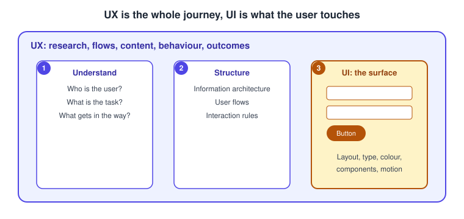
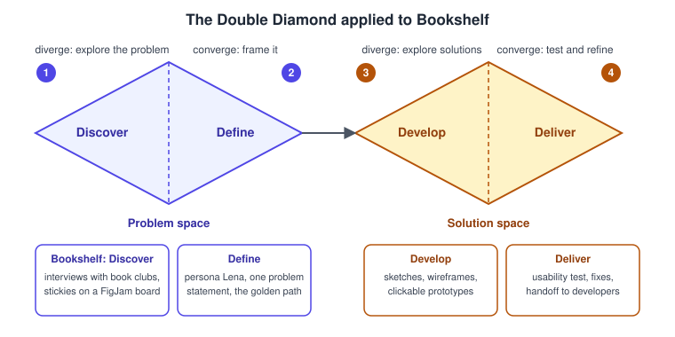
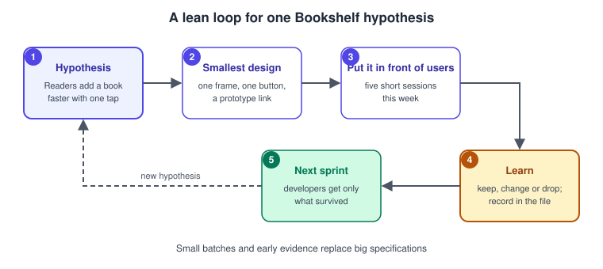

UX Process and Design Thinking
|
This content was generated with the assistance of AI and should be verified against the official documentation before being relied on in production. |
This page was written on 2026-10-30 against the UI3 interface of Figma. It is a process page rather than a feature page: it explains how UX work is organised and then maps each phase to the Figma product that supports it. Figma Design, FigJam, Slides and Make are the products used here. At the time of writing the Figma help center describes Sites and Buzz as beta; the status of every other product and the seat or plan each needs is covered on Introduction and Product Family and Plans, Seats and AI Credits, so check them before planning a team workflow around a product. The process models below (design thinking, Double Diamond, Lean UX) are not Figma features: they are ways of working that you can apply with any tool.
The running example is Bookshelf, a book catalogue and review app. The question for this page is: how does a team get from "readers struggle to keep track of books" to a tested design that developers can build?
UX design and UI design
The two terms are often used as if they were one job, but they describe different things. Figma’s resource library defines UX design as the work on a user’s overall experience of a product, grounded in research and testing, and UI design as the work on the visual elements of the interface such as buttons, colours and layouts. In practice UX answers "is this the right thing, in the right order, for these people?" and UI answers "how does it look and respond on the screen?".
For Bookshelf, deciding that a reader should be able to add a book to a shelf from the search results (rather than only from the book page) is a UX decision. Choosing the button’s colour, radius and label is a UI decision. A change to the UI cannot rescue a flow that sends users to the wrong place, and a good flow still suffers from a button nobody can see. The two overlap constantly, which is why one file and one team usually carry both.

Design thinking
Design thinking is a human-centred approach to problem solving: understand the people affected, frame the problem, generate many ideas, build cheap prototypes and test them. It is commonly taught as a set of stages (for example empathise, define, ideate, prototype and test), though different schools name and count the stages differently, and the stages are not a strict sequence. Teams loop back when a test reveals that the problem was framed wrongly.
The practical value for a designer is that each stage has a typical output you can keep in a file: interview notes and clusters, a persona and a problem statement, sketches and wireframes, a clickable prototype and a list of findings. Those outputs are the subject of the sibling pages Research, Personas and Journey Maps, Information Architecture and User Flows, Wireframing and Fidelity and Usability Testing and Iteration.
The Double Diamond
The Double Diamond is the UK Design Council’s visual model of the design process. It has two diamonds, each of which first opens up (diverges) to explore and then narrows (converges) to focus. The first diamond is about the problem and the second about the solution. The four phases, as the Design Council describes them, are:
-
Discover: understand the problem through the people affected, not through assumptions.
-
Define: use the insights to frame the challenge.
-
Develop: generate varied solutions and refine them, ideally with other people.
-
Deliver: test small-scale solutions, drop those that fail and improve those that work.
The Design Council states that this is not a linear process: teams often loop back as they learn, and early prototypes can themselves be a form of discovery. Treat the diagram as a map of the kind of thinking needed (wide, then narrow) rather than as a project schedule.

-
Discover diverges: interviews with book-club organisers, competitor notes and observations, all collected as stickies.
-
Define converges: the many notes are clustered into one problem statement and a persona.
-
Develop diverges again: several ideas for the add-to-shelf flow are sketched and wireframed.
-
Deliver converges: the best idea is prototyped, tested with users and handed to developers.
Figma publishes Community files that lay out the Double Diamond as a FigJam or Design template. Those are individual contributors' files, so their quality and maintenance vary; use them as starting points, not as official guidance.
Lean UX and agile
Lean UX adapts the lean-startup idea of learning quickly to design work. Instead of producing a large specification before development starts, the team writes down a hypothesis, builds the smallest design that can test it, shows it to real users and uses what it learns to decide the next step. It is usually associated with Jeff Gothelf’s book on the subject, so consult the book or the author’s material for the full method rather than relying on this summary.
Agile software teams work in short iterations. Design fits in two ways. Design can run slightly ahead of development, so that screens for the next sprint are explored and tested while the current sprint is being built. Or designers and developers can work on the same slice together. Either way the unit of work becomes small: one flow or one component per iteration instead of the whole app. A tidy Figma file helps here: use sections and clear names (see Frames, Groups and Sections) so that a developer can tell which frames are ready.

Source: Design Council: Framework for Innovation (on iteration and looping back)
-
Hypothesis: for example, readers add a book faster with a single tap.
-
Smallest design: one frame, one button and a prototype link.
-
Put it in front of users: a few short sessions (see Usability Testing and Iteration).
-
Learn: keep, change or drop the idea and record the decision next to the design.
-
Next sprint: only what survived goes to developers, then a new hypothesis starts the loop again.
Some UX writing calls an unpolished, in-progress file "messy" and encourages sharing it early. That is a working habit, not a Figma feature: share rough work in a file or section that is clearly marked as in progress, and keep the files other teams consume tidy.
Where each Figma product fits
Figma is a family of products that share a workspace, and different phases lean on different ones. The mapping below is a suggestion based on the products' documented purposes, not a rule, and teams mix tools freely.
-
FigJam is the whiteboard for thinking with others: research boards, stickies, clustering, journey maps, flows and workshops. It fits Discover and Define.
-
Figma Design is where screens are drawn: wireframes, high-fidelity layouts, components and prototypes. It fits Develop and Deliver, and the prototype tab covers the clickable test material (see Prototyping Basics).
-
Figma Make generates a working prototype from a prompt. It fits Develop when you want to explore an idea quickly. Make output is a draft to evaluate, and judging it still needs the same research and testing.
-
Figma Slides presents rationale, findings and decisions to stakeholders, at the end of Define and during Deliver.
-
Dev Mode in Figma Design is the handoff view for developers, in Deliver. Access depends on the seat, so check the seat page above.
-
Presenting and sharing prototypes with testers is covered on Presenting and Testing Prototypes.
Source: Figma Learn: What is Figma?
Source: Figma Learn: What is Figma?
For accessibility, the process does not have a separate phase: check it at every stage, from low-fidelity layouts to the final prototype. The site page Accessibility covers WCAG in general, and Accessible and Inclusive Design shows how to apply it in Figma.
Putting it together on Bookshelf
-
In Discover, set up a FigJam board with the project goal and paste interview notes as stickies.
-
In Define, cluster the stickies, write one problem statement and a persona, and sketch the golden path (the shortest route to success) as a user flow.
-
In Develop, draw two or three alternatives for the add-to-shelf step as wireframes and choose one with the team.
-
In Deliver, link the chosen screens into a prototype, run a short test, fix what you find and mark the frames ready for developers.
-
Repeat with the next hypothesis. Each loop should be small enough to finish within a sprint.
Source: Figma Learn: What is Figma?
Where older guides are out of date
Book-length guides to Figma written before 2025 describe the pre-UI3 interface (a top toolbar and a Resources button). UI3 has been the only interface since 2025-04-30, so use the current help articles for menu locations. Their descriptions of seats and plans (editor and viewer seats, a "paid Team plan") predate the Full, Dev, Collab and View seat model in use since 2025-03-11, and their AI notes (FigJam AI or Make described as beta) are older than the current product status. The process models on this page are not affected by these tool changes.
References
-
Figma resource library, What is user experience (UX) design?: https://www.figma.com/resource-library/what-is-ux-design/
-
Figma Learn, What is Figma?: https://help.figma.com/hc/en-us/articles/14563969806359
-
Design Council, Framework for Innovation (the Double Diamond): https://www.designcouncil.org.uk/our-resources/framework-for-innovation/
-
Figma Community, Double Diamond and design thinking templates (third-party contributions): https://www.figma.com/community/file/1092769222074462910/design-thinking-double-diamond-ux-tools